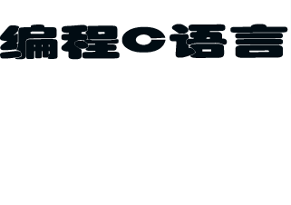

C语言诞生于美国的贝尔实验室，由丹尼斯·里奇以肯·汤普森设计的B语言为基础发展而来，在它的主体设计完成后，汤普森和里奇用它完全重写了UNIX，且随着UNIX的发展，c语言也得到了不断的完善。为了利于C语言的全面推广，许多专家学者和硬件厂商联合组成了C语言标准委员会，并在之后的1989年，诞生了第一个完备的C标准，简称“C89”，也就是“ANSI C”，截至2020年，最新的C语言标准为2018年6月发布的“C18”。
C语言拥有经过了漫长发展历史的完整的理论体系
在编程语言中具有举足轻重的地位
所以我想邀请您来参加我的C语言交流会